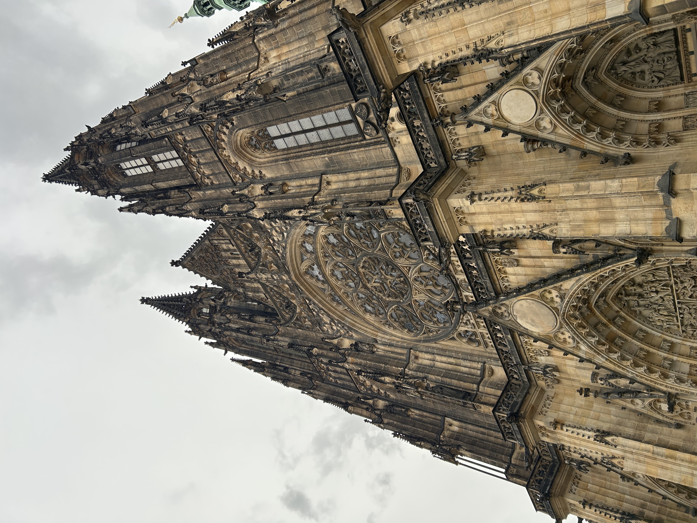
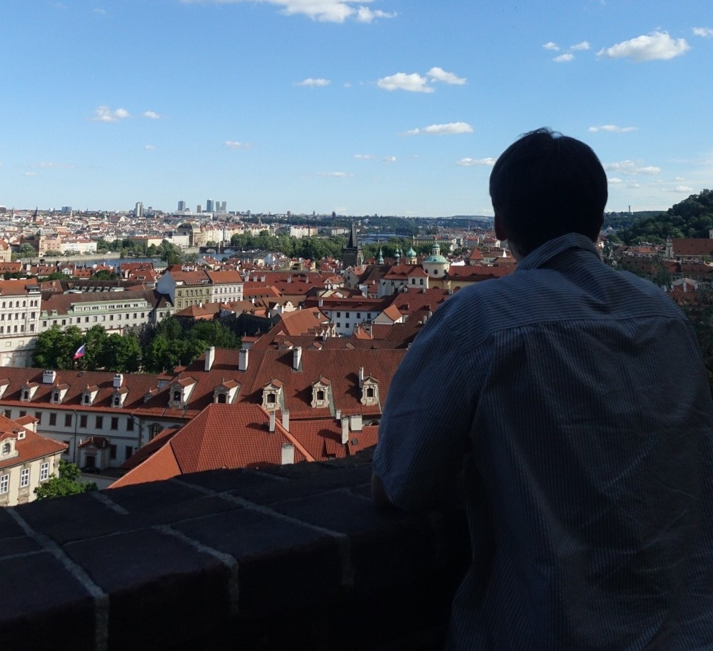
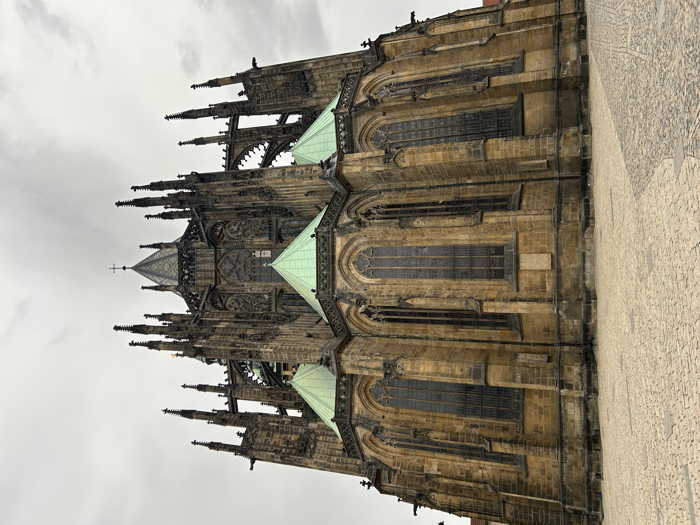

One of the most magnificent places that my wife and I visited when we arrived in Prague was the historic Prague Castle, at the heart of which lies the famous St. Vitus Cathedral.
The Castle is the largest ancient castle complex in the world, according to the Guinness Book of World Records, and was founded in 880 AD by Prince Borivoj, the first Christian prince of Bohemia, as a wooden fortress. The first walled building constructed at the site was the Church of the Virgin Mary, but other churches, dedicated to St. George and St. Vitus were built in the 10th century. In the year 1060, Prince Spytihnev II began construction of a larger Romanesque basilica to replace the old church.
In the middle of the 14th century, the castle became the seat of Emperor Charles IV, ruler of the Holy Roman Empire. The Gothic church which stands today began construction in 1344. However, the Hussite Wars that followed led to the abandonment of the Castle, and it fell into dilapidation, with the central Catholic cathedral unfinished. It wasn't until the 19th century that work began again in earnest, and the St. Vitus Cathedral was finally finished in 1929, nearly 600 years after construction began.

